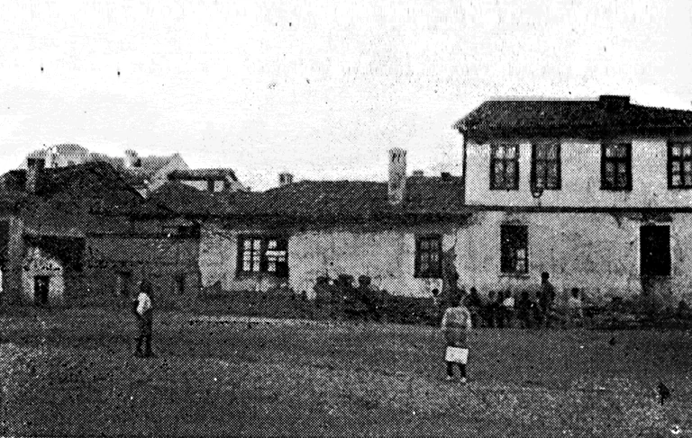
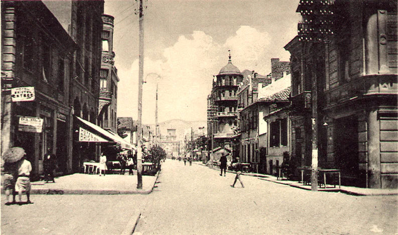

Tregu i Gjelbër
- Prodhimi
- UFUŽ dhe Dokumentar Filmi Pragë
- Skenari dhe regjia
- Slavko Janevski dhe EMAN CANERA
- Viti
- 1959
- Kohëzgjatja
- 00:18

Shtëpi të krishtera në Shkup - 1870.

Pjesë e çarshisë së vjetër të Shkupit, 1902. Një radhë dyqanesh me kapakë para Kurshumli Hanit. Në sfond duket kulla e Hamamit Gjylsheni.

Rruga kryesore gjatë formimit të saj (sot rruga "Makedonija", që shtrihet nga Muzeu i sotëm i Qytetit të Shkupit drejt Urës së Gurit). Djathtas duket kisha katolike në stil gotik, ndërsa majtas disa ndërtesa. Pjesa pranë Urës së Gurit u shtrua më 1911 që të kalonte sulltani Mehmedi V (Reshadi), i cili erdhi të vizitonte Shkupin para nisjes për në Fushë Kosovë.

Fotografia është bërë nga ndërtesa e stacionit të vjetër hekurudhor - Muzeu i sotëm i Qytetit të Shkupit - ndërtuar më 1873 në kohën e Perandorisë Osmane. Në plan të parë është afrimi drejt stacionit, me sipërfaqe të gjelbra të rrethuara. Më tej është rruga kryesore që të çon te sheshi. Në fillim të rrugës majtas është hoteli "Rusija".

Pamje drejt rrugës kryesore "Makedonija". Porta është ngritur për nder të një mysafiri të rëndësishëm. Majtas saj është hoteli "Rusija". - fillimi i shekullit XX.

Rruga kryesore me hotelin "Moskva" - vitet 1920

Rruga kryesore, sot Makedonija, që të çon nga Muzeu i sotëm i Qytetit të Shkupit drejt sheshit. Në fund të rrugës duket Shtëpia e Oficerëve, dhe djathtas saj Oda Ekonomike-Tregtare - vitet 1930.

Rruga kryesore, fotografuar drejt Muzeut të sotëm të Qytetit të Shkupit - rreth vitit 1920.

Rruga kryesore (sot Makedonija), nga sheshi drejt stacionit hekurudhor - rreth vitit 1920.

Rruga kryesore, Makedonija, nga Muzeu i sotëm i Qytetit të Shkupit drejt sheshit. Majtas është hoteli Bristol, djathtas duket Pallati Kranga. (vitet 1930)

Rruga kryesore që të çon nga Muzeu i sotëm i Qytetit të Shkupit drejt sheshit. Fotografuar pranë hotelit të sotëm "Bristol" dhe Pallatit Kranga. Në sfond duket Shtëpia e Oficerëve - rreth vitit 1935.

Rruga kryesore që të çon nga Muzeu i sotëm i Qytetit të Shkupit drejt sheshit. Ndërtesa në cep është Pallati Kranga - vitet 1930.

Pallati Kranga. - vitet 1930.

Rruga përgjatë kejit në bregun e djathtë të Vardarit. - vitet 1930

Rrugë në pjesën e vjetër të qytetit drejt çarshisë së vjetër - fundi i shekullit XIX.

Rruga nga Ura e Gurit drejt çarshisë së vjetër. - vitet 1920

Rrugë në pjesën e vjetër të qytetit, drejt lagjes Çair. Në plan të parë janë një stacion karrocash me kuaj dhe çezma e vjetër turke. Në sfond janë ndërtesa me arkitekturë të vjetër popullore - vitet 1920.

Ura e Gurit drejt çarshisë së vjetër. Majtas një radhë dyqanesh, ndërsa djathtas ndërtesa e dentistit Dr. Ruben dhe një radhë dyqanesh drejt çarshisë së vjetër - rreth vitit 1935.

Rruga "Kruševska" në lagjen Pajko, vitet 1920.

Kjo rrugë sot nuk ekziston. Shtrihej paralel me rrugën kryesore, nga sheshi drejt stacionit të vjetër hekurudhor (Muzeu i sotëm i Qytetit të Shkupit) - vitet 1920

Rruga kryesore (sot "Makedonija") - vitet 1920.

Rrugë e çarshisë së vjetër në Shkup. Në sfond Xhamia e Mustafa Pashës. - vitet 1930

Rrugë në çarshinë e vjetër të Shkupit. Në sfond duket Xhamia e Mustafa Pashës. - vitet 1930

Rruga "Cvetan Dimov" në lagjen Çair, vitet 1940. Në sfond duket Xhamia e Mehmed Pashës.

Shkupi, vitet 1950. Hyrja në çarshinë e vjetër të Shkupit - vendi i shtëpisë së mallrave "Most". Në plan të parë është një grup dyqanesh, të shembura pas tërmetit të vitit 1963. Majtas duket një pjesë e Kalasë së Shkupit. Në sfond është Xhamia e Mustafa Pashës.

Sheshi i vogël në çarshinë e vjetër të Shkupit, vitet 1950.

Rruga 11 Tetori, fotografuar nga sheshi drejt Kuvendit të sotëm të Republikës së Maqedonisë. Në sfond duket ndërtesa e vjetër e Administratës së Punëve të Brendshme. - vitet 1950

Rruga 11 Tetori me Kuvendin e Republikës së Maqedonisë në të majtë. Majtas duket edhe kulla mesjetare. Në pjesën e pasme të fotografisë duket një pjesë e ndërtesës së postës së vjetër. - fundi i viteve 1950

Rruga "Goce Delčev", fotografuar nga sheshi. Në plan të parë majtas duket një pjesë e hotelit "Makedonija", që u shemb në tërmetin e vitit 1963. - vitet 1950

Rruga kryesore drejt sheshit. Në plan të parë është kisha katolike. - vitet 1950

Rruga kryesore drejt stacionit hekurudhor (Muzeu i sotëm i Qytetit të Shkupit). Majtas duket kisha katolike. - vitet 1950

Rruga kryesore "Makedonija", drejt sheshit. - vitet 1950

Shkupi, 1950. Pjesa perëndimore e rrugës kryesore. Në të majtë është hoteli "Moskva".

Në plan të parë është kryqëzimi i rrugës 11 Tetori dhe bulevardit Kočo Racin. Djathtas kullës në ndërtim duket furra e vjetër ushtarake nga Lufta e Parë Botërore - vitet 1950

Kryqëzimi i bulevardit Kočo Racin dhe rrugës 11 Tetori. - vitet 1950

Rruga pranë Spitalit të qytetit dhe Universitetit Punëtor - vitet 1950

Rruga 11 Tetori - fundi i viteve 1970, drejt sheshit "Maqedonia".

Pamje nga rruga 11 Tetori drejt sheshit "Maqedonia". Majtas janë ndërtesa banimi, djathtas ndërtesa e ndërmarrjes elektrike. - fundi i viteve 1970

 Ujësjellësi4 kartolina
Ujësjellësi4 kartolina Kalaja30 kartolina
Kalaja30 kartolina Urat60 kartolina
Urat60 kartolina Kej58 kartolina
Kej58 kartolina Sheshi46 kartolina
Sheshi46 kartolina Ndërtesat66 kartolina
Ndërtesat66 kartolina Kishat e krishtera19 kartolina
Kishat e krishtera19 kartolina Objektet myslimane33 kartolina
Objektet myslimane33 kartolina Shtëpia e Oficerëve29 kartolina
Shtëpia e Oficerëve29 kartolina Teatri28 kartolina
Teatri28 kartolina Stacioni hekurudhor13 kartolina
Stacioni hekurudhor13 kartolina Shkollat36 kartolina
Shkollat36 kartolina Parqet12 kartolina
Parqet12 kartolina Tregjet18 kartolina
Tregjet18 kartolina Rrugët38 kartolina
Rrugët38 kartolina Panorama I60 kartolina
Panorama I60 kartolina Panorama II30 kartolina
Panorama II30 kartolina Kolazhe55 kartolina
Kolazhe55 kartolina Përmbytjet9 kartolina
Përmbytjet9 kartolina Tërmeti27 kartolina
Tërmeti27 kartolina Shkupi 200026 kartolina
Shkupi 200026 kartolina